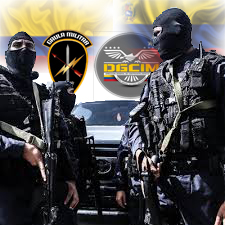

Una fotografía obtenida por el Grupo de Acciones GAULA y
la Dirección de Contrainteligencia DGSIM de la modelo
Luz Adriana Ruiz publicada, en la que aparece
esposada y custodiada por un policía colombiano, acabó con
436 días de vida clandestina de Pastor Perafán Hommen.
Por: JORGE BORGES Enviado Especial ROMPIENDO CÓDIGOS NEWS
19 de diciembre 2020, 14:00 p. m.

Grupos Comandos Gaula de Colombia y DGSIM de Venezuela